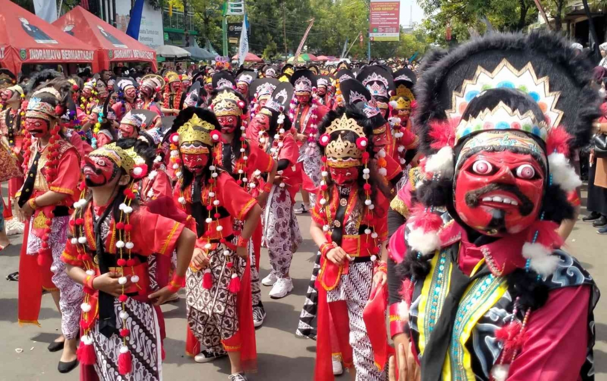
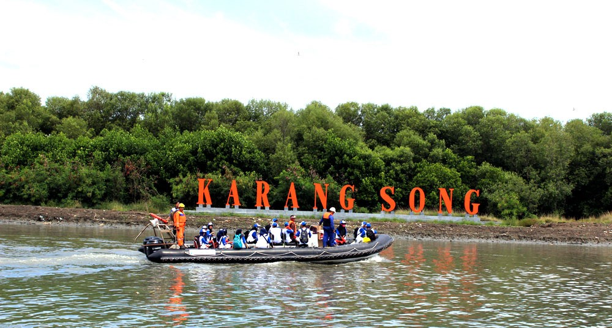

Sejarah
Indramayu, sebuah kabupaten di pesisir Jawa Barat, didirikan oleh Raden Arya Wiralodra pada 7 Oktober 1527, yang juga diperingati sebagai Hari Jadi Kabupaten Indramayu. Nama "Indramayu" berasal dari nama seorang wanita cantik bernama Nyi Endang Darma Ayu. Setelah Raden Arya Wiralodra melakukan tapa brata di Gunung Sumbing dan mendapatkan wangsit untuk membuka hutan di lembah Sungai Cimanuk, ia mendirikan perdukuhan. Ketika Arya Wiralodra tidak ada, datanglah seorang wanita cantik bernama Nyi Endang Darma. Wanita ini bertemu dengan orang pertama yang tinggal di Indramayu, yaitu Ki Tinggil. Dari pertemuan itu, nama “Indramayu” pun muncul. Nyi Endang Darma Ayu sebutan “Darma Ayu” lama kelamaan berubah menjadi “Dermayu” dan kemudian menjadi “Indramayu” seperti yang kita kenal sekarang.
Kabupaten Indramayu terkenal dengan hasil bumi berupa buah mangga, terutama Mangga Cengkir atau Mangga Gedong Gincu, yang dikenal dengan nama Mangga Indramayu. Mangga ini memiliki rasa sangat manis saat matang dan tidak terlalu asam saat belum matang. Kebun mangga di Indramayu umumnya menanam mangga dari bibit hasil okulasi. Karena kualitasnya, Kabupaten Indramayu sering dijuluki sebagai Kota Mangga.
Budaya

Tari Topeng adalah seni tari tradisional dari Cirebon termasuk Indramayu, yang dikenal di tatar Parahyangan. Penari mengenakan topeng untuk menggambarkan karakter tertentu dalam tarian. Salah satu jenisnya adalah Tari Topeng Kelana Kencana Wungu, yang menceritakan kisah Ratu Kencana Wungu yang dikejar Prabu Menak Jingga. Topeng yang digunakan, biru untuk Kencana Wungu dan merah untuk Menak Jingga, menggambarkan sifat masing-masing karakter. Tari ini memiliki gerakan gemulai dengan iringan musik kendang dan rebab.
Tari Topeng masih dipelajari dan dipentaskan di sanggar-sanggar tari, seperti Sanggar Tari Topeng Mimi Rasinah di Indramayu. Mimi Rasinah, meskipun menderita lumpuh sejak 2006, akan tetap aktif dalam seni tari hingga wafat pada Agustus 2010.
Wisata
Indramayu, yang terletak di pesisir utara Jawa Barat, memiliki pesona wisata tersendiri yang berbeda dari kota-kota besar di sekitarnya. Sebagai daerah yang dikenal dengan hasil pertanian dan perikanannya, Indramayu menawarkan pengalaman wisata yang kaya akan keindahan alamnya.
Pantai Karang Song

Berada di jantung Kabupaten Indramayu, Pantai Karangsong menawarkan lebih dari sekadar panorama laut yang indah dan mempesona. Pantai ini, yang terletak di ujung barat Pulau Jawa, menyuguhkan keunikan tersendiri dengan hutan bakau yang tumbuh subur di sepanjang garis pantainya. Tidak hanya menjadi destinasi wisata yang sempurna bagi mereka yang mencari ketenangan dan keindahan alam.
Taman Kali Cimanuk

Taman Cimanuk terletak di bantaran Sungai Cimanuk, Kabupaten Indramayu, Jawa Barat. Kawasan ini menawarkan keindahan dengan pepohonan rindang dan pemandangan Sungai Cimanuk yang luas, menjadi tempat favorit untuk menikmati suasana sore yang segar, terutama di cuaca panas khas Indramayu. Taman ini memiliki bangku melengkung yang unik dan lorong tumbuhan rambat hijau yang sering dijadikan latar foto oleh pengunjung. Selain itu, tersedia wisata sepeda air berbentuk bebek dengan tarif sekitar Rp 20.000 per jam, menawarkan pengalaman menikmati sungai sambil menikmati jajanan.